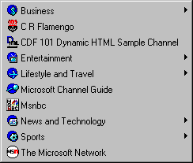
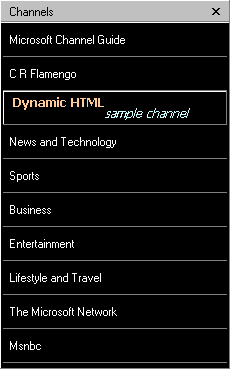
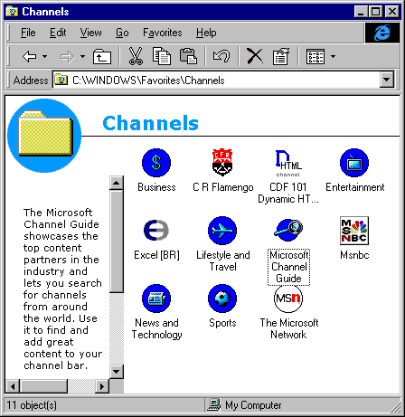

|
| ||
|
| ||
George Young
Microsoft Corporation
Updated: October 21, 1997 (revised for Internet Explorer 4.0 final release)
Contents
Abstract
Introduction
What's in It for Users
What's in It for Developers
The User Perspective
The Developer Perspective
A Sample Channel
Active Channel Contents
Branded Graphics
The CDF File
Posting the Channel for Users
For More Information
Next in This Series ...
This article is the first in a series on developing channels using the Microsoft® Active Channel™ technology. After reading this article, you will understand the basics of this new technology, become familiar with its benefits, and be able to immediately create your own channel. Subsequent articles will cover more advanced features of Active Channel technology.
With the release of Microsoft® Internet Explorer 4.0, Microsoft introduces Active Channel technology and the Channel Definition Format (CDF). At its core, CDF gives Web-site authors and developers a means of organizing and delivering information to users in a way that benefits both user and provider.
By employing CDF, authors can build Active Channel sites that provide a set of timely, structurally-related, branded Web pages to a targeted, interested audience. Users can select the Web content that they want to receive, knowing it will be updated regularly. Users can "subscribe" (free of charge) to the Active Channel content of their choice simply by clicking a link provided on the author's Web site.
For users, Active Channel technology provides a rich and intuitive Web browsing experience in a familiar environment.
Active Channel technology allows developers to extend their Web offerings while making use of existing developer skills.
Internet Explorer ships with a few default channels, but users will most likely subscribe on their own as they find channels that meet their needs, either via the Active Channel Guide  or via a Web site with which they are already familiar.
or via a Web site with which they are already familiar.
Channels created with Active Channel technology are viewed in a default, often full-screen, "Channels" mode which displays the Channel Bar (see below) in the Explorer Pane to the left. There are a number of ways in which users can view channels in Internet Explorer.
1. Click the Channels button on the Internet Explorer toolbar (Figure 1). This will open the Channel Bar (see below) in the Explorer Pane, preserving Internet Explorer's current mode (full screen or normal).
Figure 1. The Channels button on the Internet Explorer toolbar
2. If Active Desktop is enabled, click the View Channels button on the QuickStart toolbar next to the Windows Start menu (Figure 2). This will launch Internet Explorer in Channels mode with the Channel Bar visible.
Figure 2. The View Channels button on the QuickStart toolbar
3. If Active Desktop is enabled, click an Active Channel logo on the Active Desktop Channel Bar (Figure 3). This will launch Internet Explorer in Channels mode with the Channel Bar visible, and load the Channel on whose logo the user clicked.
Figure 3. The Active Desktop Channel Bar
4. Select the Active Channel by name from the Favorites | Channels menu (Figure 4). Users can access this menu from either the Internet Explorer menu or the Windows Start menu. This will load the Channel on whose name the user clicked, while preserving Internet Explorer's current mode.

Figure 4. The Channels menu
5. Once in Channels mode, users can directly view any channel to which they have subscribed by clicking on the channel's logo in the Explorer Pane Channel Bar (Figure 5).

Figure 5. The Explorer Pane Channel Bar
6. Less commonly, users can view the entire set of subscribed channels in an Explorer window. If Active Desktop is enabled, this view also displays a brief description, or abstract, of each channel (Figure 6). Double-clicking a channel here opens it for viewing in Internet Explorer.

Figure 6. The Channels folder in Web View
For the developer, an Active Channel technology has three basic components:
In this sample, we'll build a simple channel that delivers information on Dynamic HTML.
Our main page will be the Internet Explorer 4.0 home page, with two subpages consisting of content from the Site Builder Network site. Note that instead of using existing pages, we could have created pages explicitly for the channel.
The channel needs three graphics; a 194x32-pixel "wide" image in GIF format, an 80x32-pixel image in GIF format, and a 16x16-pixel icon in GIF or ICO format (Figure 7). If you are running Microsoft Office 97  , you have all the tools you need to create these images. To make the GIF image, we used Windows Paint, which has been enhanced in Microsoft Office 97 to create GIF and JPEG graphics.
, you have all the tools you need to create these images. To make the GIF image, we used Windows Paint, which has been enhanced in Microsoft Office 97 to create GIF and JPEG graphics.
Internet Explorer 4.0 uses the color in the top-left pixel as the background for the image when the user increases the width of the Channel Bar beyond the default of 194 or 80 pixels.
We created the icon using the Icon Editor, which is available with the Windows 95 Resource Kit.
Figure 7. Branded graphics
The Channel Definition Format (CDF) file defines the structure of the channel. Here's the entire code listing from the CDF for our sample channel. Take a few minutes to review it, and then we'll cover it in detail below.
<?XML Version="1.0"?> <CHANNEL href="http://www.microsoft.com/ie/ie40/features/ie-dhtml.htm"> <ABSTRACT>This is a sample channel, used in the CDF 101 article, which has some Dynamic HTML information</ABSTRACT> <TITLE>CDF 101 Dynamic HTML Sample Channel</TITLE> <LOGO href="http://www.microsoft.com/workshop/delivery/channel/cdf1/dhtml.ico" STYLE="icon" /> <LOGO href="http://www.microsoft.com/workshop/delivery/channel/cdf1/dhtml.gif" STYLE="image" /> <LOGO href="http://www.microsoft.com/workshop/delivery/channel/cdf1/dhtml-w.gif" STYLE="image-wide" /> <ITEM href="http://www.microsoft.com/workshop/author/"> <ABSTRACT>Site Builder articles about Dynamic HTML</ABSTRACT> <TITLE>Dynamic HTML Articles</TITLE> </ITEM> <ITEM href="http://www.microsoft.com/workshop/delivery/"> <ABSTRACT>Site Builder articles about building channels</ABSTRACT> <TITLE>Content & Component Delivery</TITLE> </ITEM> </CHANNEL>
Note that the syntax is very similar to HTML. One caveat: CDF is very picky about syntax; take extra care to have all the quotes and slashes in the right place. Let's take a look at the individual tags we need for the channel.
The CDF file begins with a line that identifies the XML (Extensible Markup Language) version. (CDF is based on XML, which is a Web-specific subset of the Standard Generalized Markup Language (SGML). For a quick overview, see Elementary XML, or, for a detailed specification, see the XML pages in the MSDN Online Web Workshop.)
<?XML version="1.0"?>
The main page of the channel is identified by the <CHANNEL> tag, and the information about the channel's subpages is contained within the <CHANNEL></CHANNEL> block. In the opening <CHANNEL> tag, we identify the URL of the channel's main page with the HREF attribute:
<CHANNEL href="http://www.microsoft.com/ie/ie40/features/ie-dhtml.htm">
Before describing the subpages of the channel, we need to describe its title and logos, as follows.
The <TITLE> is a short description of the channel that is displayed in the list of channels accessed from the Favorites menu. The <ABSTRACT> appears as a ToolTip when the user passes the mouse over the channel logo in the Channel Bar.
<ABSTRACT>This is a sample channel, used in the CDF 101 article, which has some Dynamic HTML information</ABSTRACT> <TITLE>CDF 101 Dynamic HTML Sample Channel</TITLE>
The <LOGO> tag identifies our two logo images and one icon. As mentioned above, the logo images are GIF-format images, 194x32 pixels and 80x32 pixels, respectively. The icon is a 16x16-pixel icon (GIF or ICO format). Note the unusual XML closing syntax for the <LOGO> tag -- you need to add a forward slash before the closing bracket.
Because the Channel Bar has a black background color, it is recommended that you use this as your primary background color for both images. Internet Explorer 4.0 will use this color as the background if the user resizes the Channel Bar beyond its default size.
<LOGO href="http://www.microsoft.com/workshop/delivery/channel/cdf1/dhtml.ico" STYLE="icon" /> <LOGO href="http://www.microsoft.com/workshop/delivery/channel/cdf1/dhtml.gif" STYLE="image" /> <LOGO href="http://www.microsoft.com/workshop/delivery/channel/cdf1/dhtml-w.gif" STYLE="image-wide" />
That's all you need to define a basic, single-page channel. Now, let's define two subpages for the channel. Each subpage has, at its most basic level, three tags: <ITEM>, <TITLE>, and <ABSTRACT>.
Adding subpages: <ITEM> element
<ITEM> defines a subpage and delimits its necessary information. The HREF attribute specifies the URL of the subpage. <TITLE> gives a short definition of the page that appears in the Channel Bar listing, and <ABSTRACT> provides a longer description that appears as a ToolTip when the user moves the mouse over the title in the Channel Pane:
<ITEM href="http://www.microsoft.com/workshop/author/"> <ABSTRACT>Site Builder articles about Dynamic HTML</ABSTRACT> <TITLE>Dynamic HTML Articles</TITLE> </ITEM> <ITEM href="http://www.microsoft.com/workshop/delivery/"> <ABSTRACT>Site Builder articles about building channels</ABSTRACT> <TITLE>Content & Component Delivery</TITLE> </ITEM>
Finally, the channel definition is closed with a closing </CHANNEL> tag. Save the file with a CDF extension; that's all there is to it. Now, we'll cover the basics of setting up the channel for installation on users' machines.
Now that we've created the CDF file, all that remains is to place the file on an HTTP server so that users can subscribe.
To do so, users click on a link to the CDF file. This link can be a text HREF, or it can be an image. So we need to place a link to the CDF file on a Web page, indicating that the user needs to click here to subscribe. Microsoft recommends that developers use a standard GIF file, which you can copy below.
<A href="http://www.microsoft.com/workshop/delivery/channel/cdf1/dhtml.cdf> <IMG BORDER=0 HEIGHT=136 WIDTH=20 src="http://www.microsoft.com/workshop/delivery/channel/cdf1/addchan.gif"> Click here to subscribe to our sample Dynamic HTML Channel.</A>
Your link will appear as shown below. If you're running Internet Explorer 4.0, go ahead and click to subscribe to our sample channel. (If you're running a version of Internet Explorer earlier than 4.0, you'll only see the button.)
Click here to subscribe to our sample Dynamic HTML Channel
Note: To use the Microsoft Add Active Channel logo, you must accept the terms of the Active Channel Logo Agreement  .
.
The next article in this series, Channels 201, discusses some of the advanced options available to developers, such as specifying an update schedule, creating a customizable channel, event logging, and specifying a channel screensaver or Desktop item.
Did you find this material useful? Gripes? Compliments? Suggestions for other articles? Write us!
© 1999 Microsoft Corporation. All rights reserved. Terms of use.